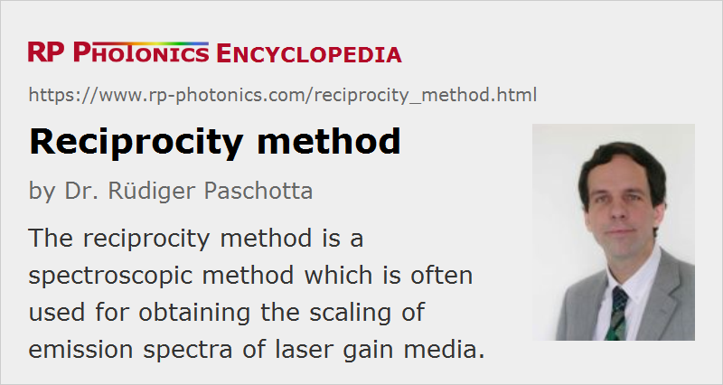

Reciprocity Method
Definition: a spectroscopic method which is often used for obtaining the scaling of emission spectra of laser gain media
German: Reziprozitätsmethode
Categories: methods, physical foundations
How to cite the article; suggest additional literature
Author: Dr. Rüdiger Paschotta
The principle of reciprocity in the context of absorption and emission cross sections goes back to Albert Einstein. Considering the simplest possible case – a transition between just two non-degenerate electronic energy levels – this principle says that the absorption and emission cross sections for this transition must be identical.
Einstein already considered an important generalization for the situation that the upper and lower level may have degeneracies, i.e. that they actually consist of multiple levels, each having the same energy. This situation often occurs for the electronic states of isolated atoms or ions. Here, effective transition cross sections can be used which describe the likelihood of transitions between any of the levels involved, and the ratio of effective emission to absorption cross sections is no longer unity, but rather equals the degeneracy factor of the lower level divided by that of the upper level. This is easy to understand: for example, emission (but not absorption) is favored by a large degeneracy of the lower level, i.e. by a large “choice” of final states in the lower level manifold.
In solid-state gain media, the situation is more complicated, because the interaction of laser-active ions with the crystal field partly removes the degeneracies. There are therefore Stark level manifolds with a spread of level energies. As this splitting can be comparable to (or larger than) the thermal energy kB T, the average population fractions for the sublevels differ according to a Boltzmann distribution. As a result, emission from the highest lying sublevel of the upper level manifold becomes weaker, as does absorption from the highest lying sublevel of the lower level manifold. Even in this regime, however, the principle of reciprocity can still be used in a convenient form, which was published by McCumber in 1964 [1] in the context of his spectroscopic theory, now called McCumber theory. The corresponding article quotes the McCumber relation

which is often used to process spectroscopic data. The constant E0 can be calculated using the reciprocity principle, if the Stark level positions within the manifolds are known.
Note that the reciprocity relation is not always fulfilled with high precision, since vibronic interactions can lead to deviations [2].
Questions and Comments from Users
Here you can submit questions and comments. As far as they get accepted by the author, they will appear above this paragraph together with the author’s answer. The author will decide on acceptance based on certain criteria. Essentially, the issue must be of sufficiently broad interest.
Please do not enter personal data here; we would otherwise delete it soon. (See also our privacy declaration.) If you wish to receive personal feedback or consultancy from the author, please contact him e.g. via e-mail.
By submitting the information, you give your consent to the potential publication of your inputs on our website according to our rules. (If you later retract your consent, we will delete those inputs.) As your inputs are first reviewed by the author, they may be published with some delay.
Bibliography
| [1] | D. E. McCumber, “Einstein relations connecting broadband emission and absorption spectra”, Phys. Rev. 136 (4A), A954 (1964), doi:10.1103/PhysRev.136.A954 |
| [2] | B. F. Aull and H. Jenssen, “Vibronic interactions in Nd:YAG resulting in nonreciprocity of absorption and stimulated emission cross sections”, IEEE J. Quantum Electron. 18 (5), 925 (1982), doi:10.1109/JQE.1982.1071611 |
See also: effective transition cross sections, McCumber theory, Füchtbauer–Ladenburg equation, fluorescence
and other articles in the categories methods, physical foundations
|  |
If you like this page, please share the link with your friends and colleagues, e.g. via social media:
These sharing buttons are implemented in a privacy-friendly way!